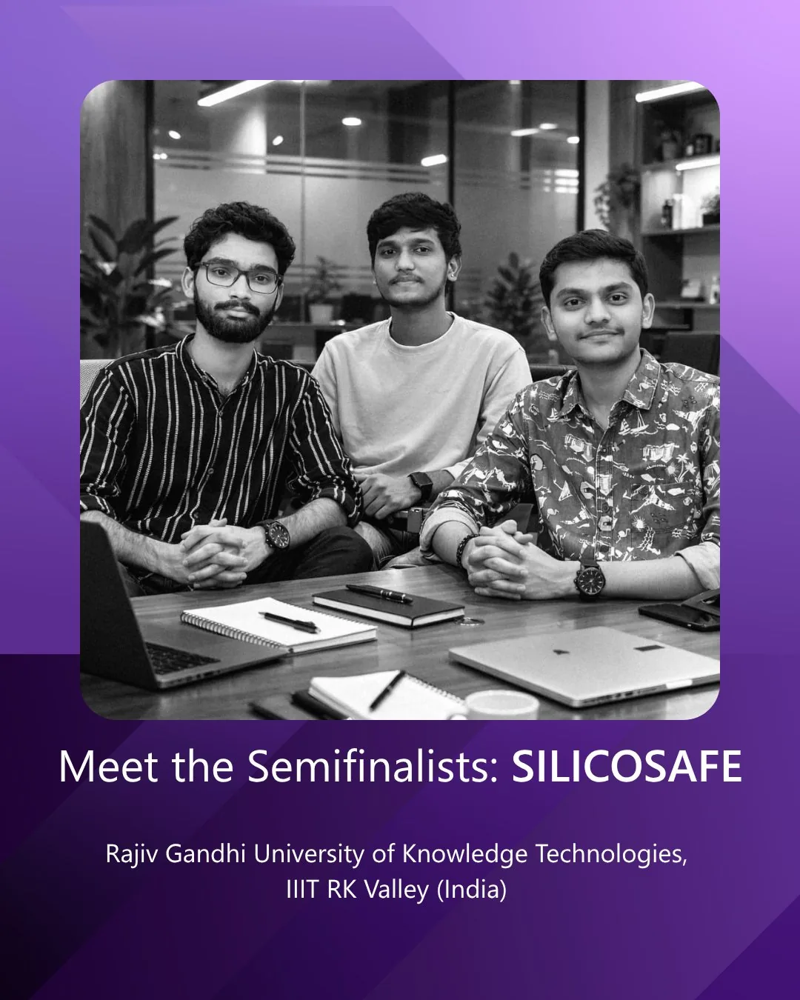
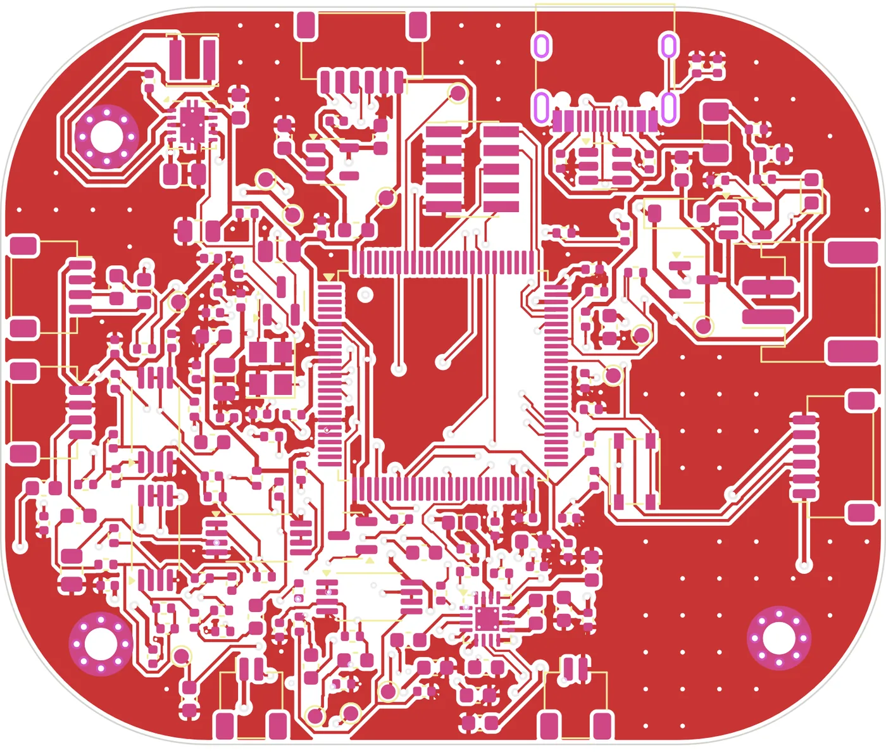
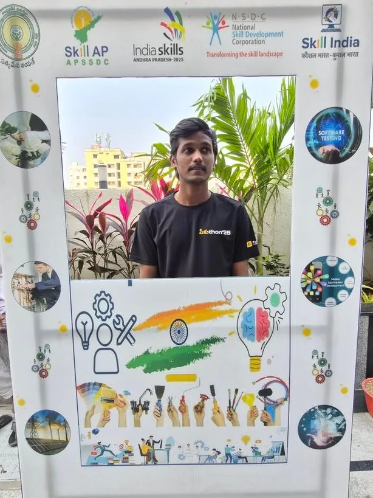
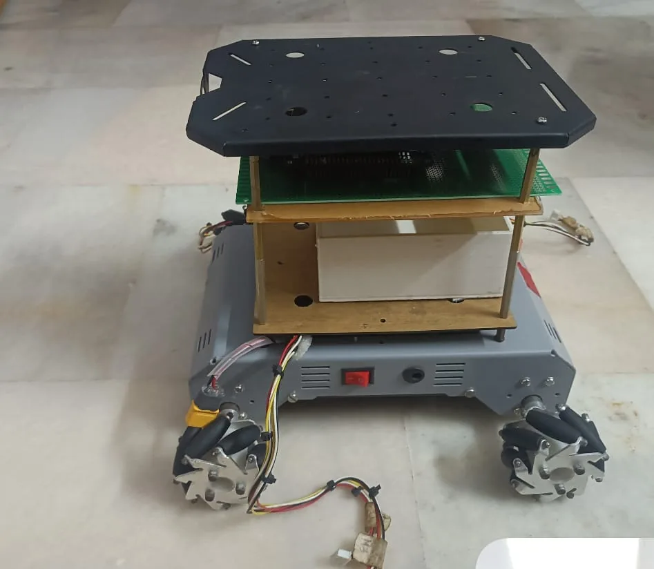
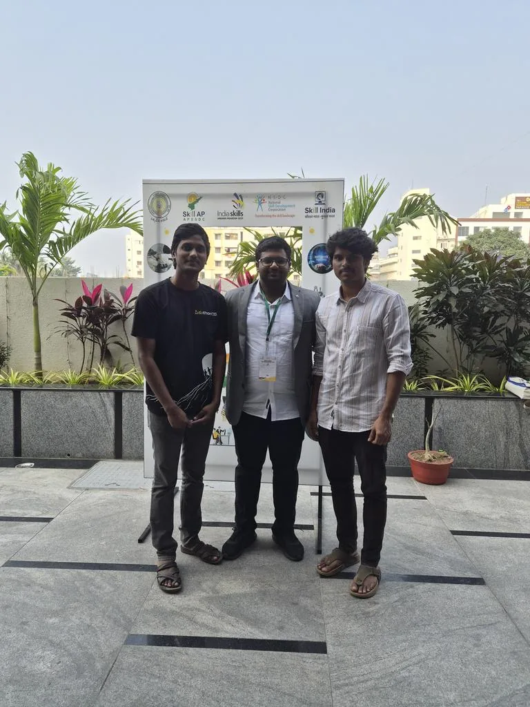
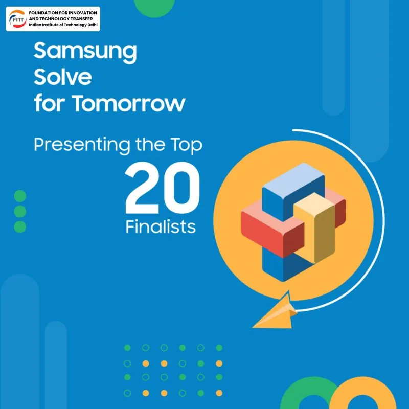
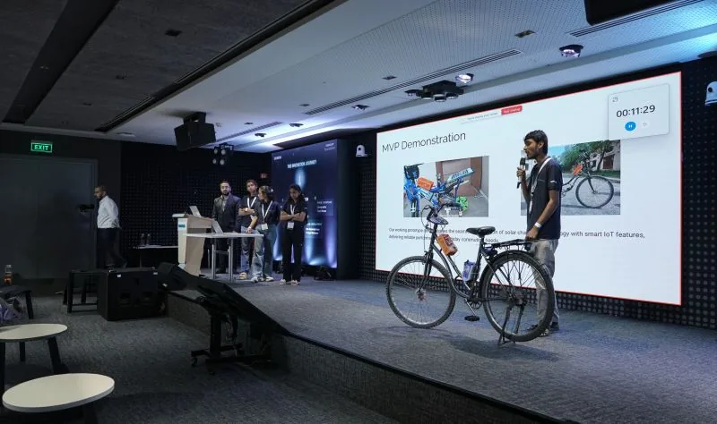
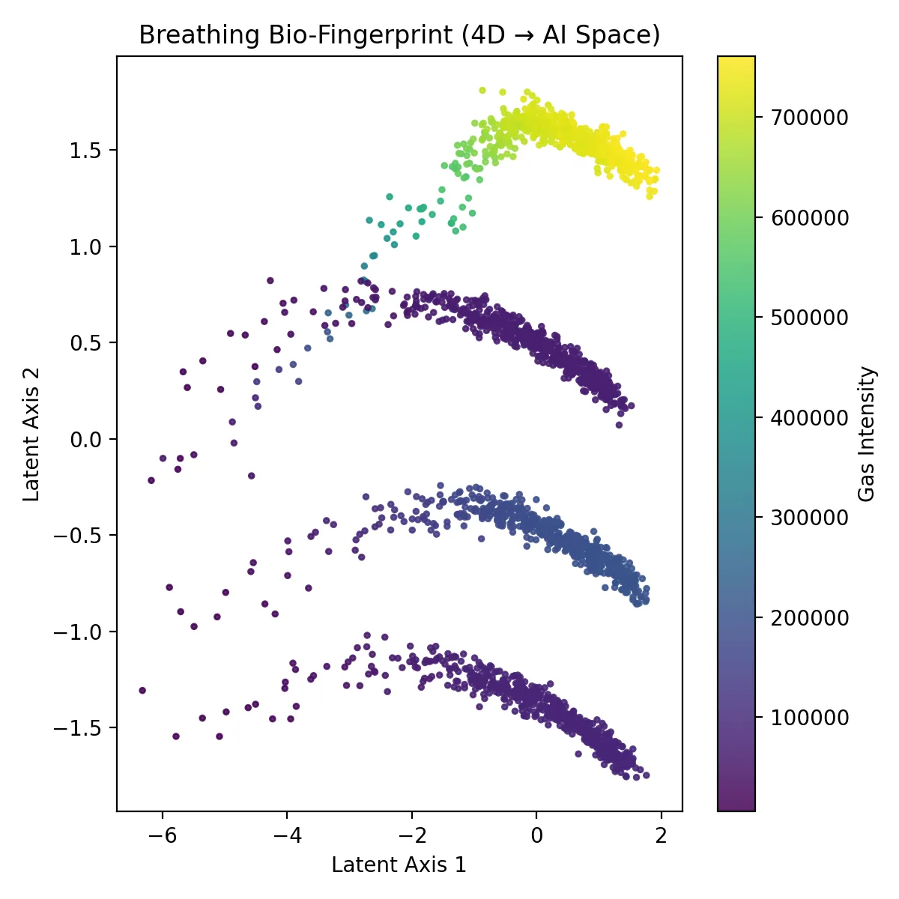
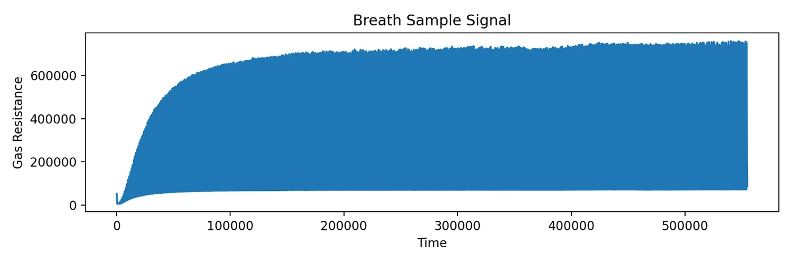
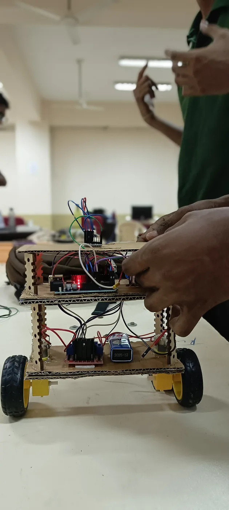

2026
Microsoft Imagine Cup
Global Top 12 Semifinalist
Spotlighted by Microsoft for SilicoSafe — early, non-invasive silicosis screening through AI-driven breath analysis.
ECE · Embedded Systems · AI/ML
Research · Build · Optimize
I design the whole stack of a device — the board, the firmware and the model on top. Computer-vision and optimization systems at ITC Limited, ESP32-S3 hardware bring-up for an ISRO project at IIT Tirupati, and a breath-based silicosis screener that reached the global top 12 of Microsoft Imagine Cup.

01 Recognition

2026
Global Top 12 Semifinalist
Spotlighted by Microsoft for SilicoSafe — early, non-invasive silicosis screening through AI-driven breath analysis.



2025
Andhra Pradesh State Gold Medalist
Called up the day after an exam, travelled 450 km, and took gold at the state level with a mecanum-wheel mobile robot.

2025
National Finalist — Top 5 teams in India

“I’ve seen mine workers lose their lives to silicosis because it was detected too late. I wanted to change that.”
02 Experience
Intern, Industry 4.0 Centre of Excellence
Research Intern — ISRO RESPOND Project (₹22 Lakh)
03 Selected projects


Medical diagnostics + startup · Jul 2025 — Present
Early silicosis detection platform
A portable, non-invasive screening platform for early-stage silicosis risk in high-risk mining and construction workers — grown out of watching mine workers in my home district lose their lives to a disease caught too late.
Embedded systems + hardware · 2026
Hybrid ANC for 100 dB(A) plant noise
An industrial safety helmet with hybrid feed-forward + adaptive feedback ANC, a built-in noise dosimeter, alarm hear-through and a seal monitor that warns when the earcup leaks.
Personal project · 2026
Signal generation & backtesting
A research pipeline for market-neutral equity strategies — the same discipline that carried me into WorldQuant BRAIN IQC Stage 2.

MPU-6050 IMU, complementary filter and PID control on Arduino keep a two-wheeled robot upright.
C++ · Control ↗The receiver unit for the ISRO RESPOND vibration-monitoring accelerometer — real-time wireless capture from the machine floor.
C++ · ESP32-S3Face-recognition authentication hooked into the Linux boot process, built with Python and OpenCV.
Python · OpenCV ↗Real-time colour segmentation and background substitution — the classic Harry Potter trick in OpenCV.
Python · OpenCV ↗04 Patents
Patent pending — 2nd filing
Breath-VOC and ML-based early silicosis screening system.
Provisional patent — filing stage
Secure USB transfer system for air-gapped industrial OT networks.
05 Toolkit
06 Education
2023 — 2027
Rajiv Gandhi University of Knowledge Technologies, RK Valley
CGPA 8.0/10
2023
Rajiv Gandhi University of Knowledge Technologies, RK Valley
90%
2021
AP Model School
87.8%
07 Contact
Open to research collaborations, internships and hardware + AI roles. The fastest way to reach me is email.
shaik.khajababa.00@gmail.com